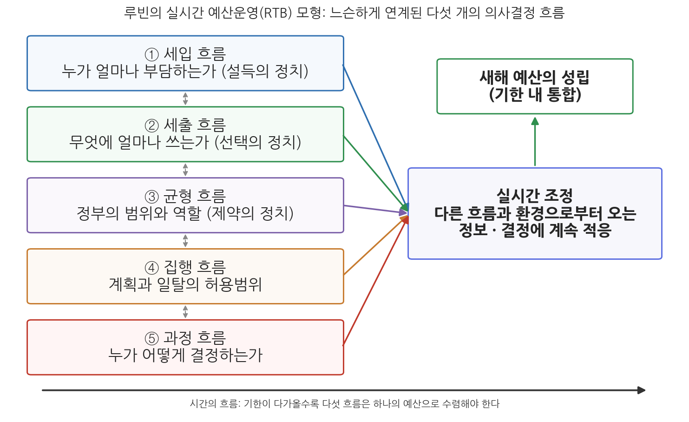
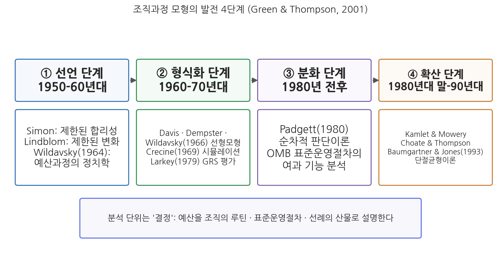

12주차 2차시. 예산이론 (2): 다중합리성 모형과 조직과정 모형
최종 수정: 2026-08-13 · 이 교재는 학기 중에도 계속 업데이트됩니다
공공예산은 단순한 기술적 관리 문서가 아니다. 그것은 본질적으로, 그리고 환원할 수 없이 정치적이다. (아이린 루빈, 『공공예산의 정치』)
이 장에서 배우는 것
2024년 12월로 가 보자. 헌법이 정한 예산안 처리 시한은 회계연도 개시 30일 전, 곧 12월 2일이다. 그러나 2025년도 예산안은 이날을 넘겼고, 국회는 12월 10일에야 본회의에서 예산안을 의결했다. 그것도 정부안(677.4조 원)에서 4.1조 원을 감액한 673.3조 원으로, 증액 없이 감액만 반영해 통과시킨 헌정 사상 처음의 예산이었다. 이 며칠 동안 무슨 일이 벌어졌는지 떠올려 보면, 예산결정이라는 것이 얼마나 여러 갈래의 결정을 한꺼번에 붙잡고 있는지 보인다. 세입 전망은 얼마인가, 어느 사업을 깎을 것인가, 재정적자는 어디까지 허용할 것인가, 그리고 무엇보다, 누가 결정할 권한을 갖는가. 이 갈래들이 각자 움직이다가 기한이라는 벽 앞에서 하나의 예산으로 수렴하는 과정, 그것이 이번 차시에서 배울 이론들이 겨냥하는 현실이다.
12주차 1차시에서 우리는 총체주의와 점증주의라는 두 개의 고전적 대답을 보았다. 그러나 앞의 장면은 어느 쪽으로도 깔끔하게 설명되지 않는다. 분석적 최적화의 결과가 아님은 분명하고, 전년도 기초 위의 안정적 소폭 조정이라고 부르기도 어렵다. 예산이론은 이 이분법을 넘기 위해 정책결정론의 자원을 빌려 왔다. 킹던(John Kingdon)의 정책결정 모형과 루빈(Irene Rubin)의 실시간 예산운영 모형이 그 재료이고, 서마이어와 윌러비(Kurt Thurmaier & Katherine Willoughby)의 다중합리성 모형이 그 통합이며, 결정을 조직의 루틴과 절차의 산물로 설명하는 조직과정 모형이 또 하나의 대안 계보다. 구체적으로 다음을 배운다.
- 킹던 모형의 세 가지 특징: 다중 의사결정의 흐름, 두 집단의 행위자, 두 형태의 기회의 창
- 루빈의 실시간 예산운영(RTB) 모형: 다섯 개의 의사결정 흐름과 실시간 조정, 시간 제약의 의미
- 다중합리성 모형: 중앙예산실의 예산분석가가 거시와 미시를 잇는 연계가 되는 논리
- 조직과정 모형의 발전 4단계(선언·형식화·분화·확산)와 대표 연구들
이 장은 하나의 질문을 따라 전개된다. "총체주의 대 점증주의의 이분법을 넘어, 예산결정의 실제를 더 정밀하게 설명하는 이론은 무엇인가?"
2.1 다중합리성 모형의 첫 재료인 킹던의 정책결정 모형을 예산의 눈으로 읽는다 → 2.2 둘째 재료인 루빈의 실시간 예산운영 모형과 다섯 흐름, 시간 제약을 본다 → 2.3 두 모형을 통합한 다중합리성 모형과 예산분석가의 역할을 살핀다 → 2.4 조직과정 모형의 4단계 전개를 따라가고, 13주차 재정개혁론을 예고한다.
2.1 킹던의 정책결정 모형과 예산
쓰레기통에서 흐름으로
킹던의 정책결정 모형은 과정모형(process model)과 쓰레기통 모형(garbage can model)을 결합해 정책의제 설정을 설명한 이론이다(Kingdon, 1984). 쓰레기통 모형은 조직의 선택 기회를 문제, 해결책, 참여자, 선택 기회가 뒤섞이는 쓰레기통에 비유한 모형인데(Cohen, March & Olsen, 1972), 킹던은 선택 기회가 참여자들이 만들어 낸 문제와 해결책으로 구성된다는 기본 논리는 유지하면서 흐름들의 유형을 바꾼 모형을 제시했다. 원래 정책학의 의제설정 이론이지만, 예산이론이 이 모형을 빌려 오는 이유는 뒤에서 볼 다중합리성 모형이 이를 한 축으로 삼기 때문이다. 킹던 모형의 특징은 세 가지로 정리된다.
첫째, 다중 의사결정의 흐름이다. 정책 과정에는 세 가지 결정 영역, 곧 문제에 대한 결정, 정책대안에 대한 결정, 정치적 결정이 있으며, 이들은 각각 독립적인 흐름(stream)을 이루며 따로 움직인다. 문제의 흐름에서는 지표, 사건, 위기가 문제를 부각시키고, 정책대안의 흐름에서는 전문가들이 해결책을 다듬으며, 정치의 흐름에서는 여론, 선거, 정권 교체가 정치 지형을 바꾼다. 세 흐름이 모두 합류하고 참여자들이 현재 정책을 변화시킬 기회의 창(window of opportunity)을 가질 때 정책 선택의 변동 가능성이 커진다. 기회의 창은 문제가 명확하고, 해결책이 존재하고, 정치적 지원이 있다는 세 요소를 모두 갖추었을 때에만 열린다. 어느 하나라도 빠지면 창은 열리지 않는다.
둘째, 두 집단의 의사결정 행위자다. 킹던은 의제를 정부가 관심을 두는 정부의제(governmental agenda)와 실제 결정을 앞둔 결정의제(decision agenda)로 구분하고, 각 흐름에서 영향력을 행사하는 참여자를 가시적 집단과 비가시적 집단으로 나눈다. 가시적 집단(visible cluster)은 대통령, 정무직 고위관료, 의회 지도자들처럼 언론과 대중의 관심을 끄는 행위자들로, 정치의 흐름을 지배하며 정부의제에 영향을 미친다. 비가시적 집단(hidden cluster)은 학자, 연구원, 직업 공무원, 의회 참모 같은 정책전문가들로, 정책대안 만들기에 몰두하며 결정의제에 영향을 미친다. 정부의제가 가시적 집단에 의해 결정의제로 전환되면 비가시적 집단이 검토와 해결책, 대안을 모색하는데, 이때 예산 제약이 실현 가능성의 잣대로서 큰 의미를 가진다. 아무리 좋은 대안도 돈의 벽을 넘지 못하면 결정의제에서 살아남지 못한다.
셋째, 두 가지 형태의 의사결정 기회다. 기회의 창에는 예측 불능의 창과 예측 가능한 창이 있다. 예측 불능의 창은 위기나 격변으로 국가적 분위기가 흔들릴 때 갑자기 열리는 창이다. 반면 예측 가능한 창은 제도가 주기적으로 열어 주는 창인데, 그 대표적인 예가 바로 매년 반복되는 예산편성 과정이다. 해마다 정해진 시기가 되면 모든 부처의 사업이 다시 심사대에 오르고, 문제와 해결책과 정치가 합류할 기회가 제도적으로 보장된다. 예산이론의 눈으로 킹던을 읽을 때 이 지점이 결정적이다. 예산과정은 정책 변동의 창이 예측 가능하게, 주기적으로 열리는 무대인 것이다.
기회의 창(window of opportunity)은 문제의 흐름, 정책대안의 흐름, 정치의 흐름이 합류하여 정책 변동이 가능해지는 짧은 시기를 말한다(Kingdon, 1984). 문제가 인식되고, 해결책이 마련되어 있고, 정치적 분위기가 변화를 받아들일 수 있으며, 다른 제약이 이를 막지 않을 때 열린다. 위기로 열리는 예측 불능의 창과 예산편성처럼 제도적 주기로 열리는 예측 가능한 창으로 나뉜다.
2.2 루빈의 실시간 예산운영(RTB) 모형
다섯 개의 흐름이 흐른다
루빈의 실시간 예산운영(real-time budgeting, RTB) 모형은 서로 성질이 다르지만 서로 연결된 다섯 개의 의사결정 흐름, 곧 세입, 세출, 균형, 집행, 과정의 흐름이 통합되면서 예산이 만들어진다고 보는 모형이다(Rubin, 『공공예산의 정치(The Politics of Public Budgeting)』). 여기서 실시간이란 한 결정의 흐름에서 이루어지는 결정이 다른 결정의 흐름과 환경으로부터 오는 정보와 결정에 계속적으로 적응하는 것을 말한다. 루빈 모형은 예산 정치 모형이다. 다만 예산운영 그 자체가 곧 정치라는 뜻이 아니라, 예산운영이 특정한 정치적 의사결정들을 포함한다는 개념에서 실마리를 풀어 간다. 흐름마다 정치의 성격이 다르다는 것이 이 모형의 매력이다. 모형의 설계에는 쓰레기통 모형과 킹던 모형의 여러 특징이 담겨 있고, 단계 모형이 지닌 정책결정의 순차적 측면도 비선형적 예산과정을 살펴보는 데 활용된다.
예산운영은 경제적·정치적 환경에 개방되어 있으며, 변화하는 외부 요인에 대처할 수 있어야 한다. 다양한 목표와 의제, 자원을 가진 여러 행위자들이 존재하기 때문에 예산운영은 변화하는 환경에 대한 융통성과 적응력을 가질 필요가 있다. 이 융통성은 느슨하게 연계된 다섯 개의 의사결정 흐름과 각 흐름의 의사결정자들, 그리고 각각의 예산운영의 정치가 통합되는 의사결정 구조에서 생긴다. 다섯 흐름을 차례로 보자.
첫째, 세입 흐름에서의 의사결정은 누가, 얼마만큼 부담할 것인가에 대답하는 것으로, 설득의 정치가 작동한다. 주요 결정은 조세와 조세정책의 변동을 통해 세입원의 제약 조건을 변경할 것인지, 변경한다면 어떻게 할 것인지이며, 세입원의 기술적 추계가 주된 제약 조건이 된다. 둘째, 세출 흐름에서의 의사결정은 예산 획득을 위한 경쟁과 예산 배분에 관한 것으로, 선택의 정치가 작동한다. 기준 예산의 기술적 추계가 첫 번째 제약 조건이지만 점차 정치적 결정의 성격이 짙어지며, 우선순위 조정의 문제로 변모한다. 셋째, 예산 균형 흐름에서의 의사결정은 제약 조건의 정치다. 예산 균형을 어떻게 정의할 것인지, 균형을 이룰 필요가 있는지, 어떻게 달성할 것인지를 결정해야 하는데, 균형의 결정은 세입과 세출 추계치 간의 상호작용인 동시에 근본적으로는 정부의 범위와 역할에 대한 결정과 연계된다. 복지 프로그램을 둘러싼 논쟁이 이를 잘 보여 준다. 균형이냐 적자냐의 다툼은 사실 정부가 어디까지 해야 하는가의 다툼이다. 넷째, 예산 집행 흐름에서의 의사결정은 기술적 성격이 강하지만, 예산계획에 따른 집행과 수정, 일탈의 허용범위에 관한 문제가 중요하다. 환경 요인이 변동되면 예산집행의 변화가 초래되기도 한다. 예산 수단인 정책과 사업은 가치중립적이지 않으므로, 집행 과정에서의 변동은 다음 연도 기준 예산에 영향을 미치고 세출 흐름과 균형 흐름에까지 파급된다. 다섯째, 예산 과정 흐름에서의 의사결정은 어떻게 예산을 결정하는가, 누가 예산을 결정하는가의 정치다. 누가 참여하는가는 예산 결과에 영향을 미친다. 이 흐름에서의 갈등은 행정부와 입법부(사법부 포함) 간, 그리고 납세자인 시민과 배분 결정자인 정부관료 간의 결정 권한의 균형에 관한 것이다. 정부사업에 대한 사회적 가치평가를 표현할 수 있는 사회는 효과적인 정치적 결정을 가능하게 하며, 정치적 합리성을 달성하게 된다.

그림 12-3을 읽는 법은 이렇다. 왼쪽의 다섯 상자가 각각의 의사결정 흐름이고, 상자 사이의 점선은 흐름들이 준독립적이면서도 정보로 연결되어 있음을 나타낸다. 다섯 흐름에서 나온 화살표는 오른쪽의 실시간 조정으로 모이고, 조정의 결과가 기한 안에 하나의 예산으로 성립한다. 맨 아래의 시간 축은 기한이 다가올수록 흐름들이 수렴해야 한다는 이 모형의 핵심을 표현한다. 이 그림에서 알 수 있는 것은 예산결정이 하나의 결정이 아니라 성격이 다른 다섯 갈래 결정의 다발이며, 그 갈래들을 묶는 힘이 분석의 완결이 아니라 시간의 압박이라는 점이다.
실시간과 시간 제약
다섯 개의 의사결정 흐름은 준독립적이지만, 핵심 정보가 서로를 연계시켜 주기 때문에 상호의존적이다. 다른 흐름에서의 결정과 정보, 정치적·경제적 환경의 변화에 반응하여 각 흐름에서 순차적으로 결정을 조정하는 일이 예산운영에 필요하다. 그런데 시간을 다루는 방식에서 정책과정 모형과 실시간 예산모형은 갈라진다. 킹던류의 정책과정 모형은 시간 그 자체보다 각 흐름이 모여 정책이 결정되는 적시성(timing)을 중시한다. 창이 언제 열리느냐가 문제이지, 언제까지 결정해야 한다는 마감은 없다. 반면 실시간 예산모형은 시간을 실질적 제약 조건으로 취급한다. 다섯 흐름 속에서 각 행위자들은 정해진 기한을 염두에 두고 예산을 결정한다는 것이 실시간 모형의 핵심이다. 물론 여기서도 시간 조절은 여전히 중요하지만, 예산에는 정책과 달리 어겨서는 안 되는 마감이 있다는 점이 결정적 차이다.
한국에서 이 마감은 헌법에 새겨져 있다.
"① 국회는 국가의 예산안을 심의·확정한다.
② 정부는 회계연도마다 예산안을 편성하여 회계연도 개시 90일 전까지 국회에 제출하고, 국회는 회계연도 개시 30일 전까지 이를 의결하여야 한다.
③ 새로운 회계연도가 개시될 때까지 예산안이 의결되지 못한 때에는 정부는 국회에서 예산안이 의결될 때까지 다음의 목적을 위한 경비는 전년도 예산에 준하여 집행할 수 있다. ..."
무슨 뜻인가. 예산은 언제까지 제출되고 언제까지 의결되어야 하는지가 헌법 수준에서 못 박힌, 마감이 있는 의사결정이라는 뜻이다. 회계연도 개시 30일 전은 12월 2일이며, 국가재정법 제33조는 정부의 예산안 제출 시한을 헌법의 90일 전보다 앞당겨 회계연도 개시 120일 전까지로 정하고 있다. 제3항은 기한을 넘겨 예산이 성립하지 못했을 때의 안전판인 준예산 제도로, 6주차 1차시에서 본 내용이다. 루빈의 언어로 옮기면, 헌법 제54조는 다섯 흐름이 아무리 따로 놀아도 결국 하나로 수렴해야 하는 시점을 강제하는 조문이고, 준예산은 수렴 실패의 비용을 낮추는 장치다.
2025년도 예산안은 헌법상 처리 시한인 2024년 12월 2일을 넘겨, 12월 10일 국회 본회의에서 의결되었다. 확정된 총지출은 673.3조 원으로, 정부안(677.4조 원)에서 4.1조 원을 감액한 규모였다. 국회 심의에서 증액 없이 감액만 반영해 예산이 확정된 것은 헌정 사상 처음이었다. 헌법 제57조에 따라 국회는 정부 동의 없이 증액할 수 없는데, 여야와 정부가 증액 협상에 합의하지 못한 채 기한 압박이 커지자 다수당이 감액만 반영한 수정안을 처리한 것이다. 예산 불성립 시 준예산 편성 가능성까지 거론되던 상황이었다. (출처: 국회 본회의 의결, 2024년 12월)
이 사례가 보여 주는 것은 루빈 모형의 설명력이다. 세입 흐름에서는 경기 둔화에 따른 세수 전망이 제약으로 작용했고, 세출 흐름에서는 어느 사업을 깎을 것인가의 선택의 정치가, 균형 흐름에서는 재정적자의 허용 범위를 둘러싼 제약의 정치가 벌어졌다. 그리고 무엇보다 과정 흐름, 곧 누가 결정하는가를 둘러싼 행정부와 입법부, 여당과 야당 사이의 권한 다툼이 전면에 드러났다. 다섯 흐름은 끝내 합의로 통합되지 못했지만, 기한의 압박은 어떤 형태로든 예산을 성립시켰다. 분석의 완결이 아니라 시간이 예산을 만든다는 실시간 모형의 통찰이 그대로 확인된 사건이다.
루빈 모형의 한계
루빈 모형의 한계는 두 가지로 지적된다. 첫째, 예산이 기한 내에 처리되어야 한다는 시간 개념에 주목했지만, 시간이 구체적으로 예산 의사결정에 어떤 영향을 미치는가까지는 분석하지 못했다. 둘째, 단계 모형과 마찬가지로 거시적 측면의 묘사적 모형에 머물러, 미시적 측면에서 개별 결정자가 어떻게 판단하는지를 들여다보지 못한다. 이 두 번째 한계를 정면으로 파고든 것이 다음 절의 다중합리성 모형이다.
2.3 다중합리성 모형의 모색
킹던과 루빈을 통합하다
윌다브스키는 말년에 현대 예산의 복잡성이 포괄적 이론의 개발을 가로막고 있다고 진단했다(Wildavsky, 1992). 그러나 포괄 이론의 꿈을 접는 대신, 예산의 합리성을 미시적 수준에서 이해하려는 연구들이 이어졌다. 그 대표가 서마이어와 윌러비의 다중합리성 모형이다(Thurmaier & Willoughby, 2001). 이들은 킹던의 정책결정 모형과 루빈의 실시간 예산운영 모형을 통합하여 예산운영의 다중합리성 모형을 제시했다. 과정적 접근에 근거하여, 정부예산의 성공을 위해서는 예산과정 각 단계의 예산활동과 행태를 구분할 필요가 있음을 강조한 것이다. 설명의 표적은 미시적 수준의 예산상 의사결정이다. 구체적으로는 각 예산주기 간의 관계, 정보의 흐름, 예산상의 역할, 그리고 최종 지출계획을 결정하는 개인의 선택이다. 이를 위해 예산운영의 과정 모형을 몇 가지 정책결정 이론으로부터 원용하고, 개인의 예산결정 전략에 관한 연구와 결합시켰다. 경험적 기반은 미국 11개 주 중앙예산실의 예산분석가들에 대한 현장연구였다.
예산분석가: 재정분석가에서 정책분석가로
다중합리성 모형이 조명하는 핵심 행위자는 중앙예산실의 예산분석가(budget analyst)다. 이들의 연구에 따르면 주정부 중앙예산실의 예산분석가는 단순한 재정분석가를 넘어 정책분석가의 역할을 수행한다. 예산분석가는 부처의 예산요구 흐름을 주지사와 주의회에 전달하고 주지사를 보좌하며 예산 산출에 상당한 영향력을 행사한다. 각 부처의 자원 활용 능력과 업무수행을 잘 알고 있을 뿐만 아니라, 최종결정권자의 입장에서 거시적 관점을 갖고 정책을 개발하고 혁신할 수 있는 능력을 지닌다. 요컨대 예산분석가의 역할은 직업관료들의 미시적 예산결정과 정무직 관료의 거시적 예산결정 사이의 조화를 도모하는 것이다. 11주차에서 본 수문장의 행태를 떠올려 보자. 다중합리성 모형은 그 수문장이 문을 지키기만 하는 것이 아니라, 거시와 미시를 오가며 정보를 거르고 연결하는 능동적 행위자임을 보여 준다.
거시적·미시적 예산결정은 환경적·조직적·기술적 요인에 의해 틀이 짜인다. 세제개혁, 법원 판결, 자연재해 같은 환경적 요인은 세입과 세출의 우선순위를 바꾸어 미시적 예산결정에 영향을 미칠 수 있다. 조직적·기술적 요인들은 의사결정자들의 정보 수집, 결정전략 형성, 현명한 선택 능력에 영향을 미친다. 예산 관료 개인의 배경, 경험, 활동도 예산과정과 다른 참여자와의 관계, 예산 단서의 해석을 이해하는 데 영향을 준다.
미시적 수준의 모형: 예산결정 의제와 기회의 창
서마이어와 윌러비는 킹던의 결정의제 개념을 확장하여 예산결정 의제(budget decision agenda) 개념을 제시한다. 예산결정 의제는 정책결정자들이 다음 예산에 적극적으로 포함시키려고 고려 중인 이슈들의 집합으로, 주로 주지사 같은 가시적 참여자 집단에 의해 결정되고, 비가시적 참여자 집단은 예산과 정책대안의 세부 사항을 다듬는다. 이 구도에서 예산실의 분석가는 예산에 관한 기회의 창에서 문제와 해결책을 연결하는 책임을 진 가장 중요한 행위자가 된다. 정책결정자가 선택해야 할 여러 정책 이슈들이 뒤섞여 있는 상태에서, 분석가들이 이를 어떻게 다듬어 내어놓느냐에 따라 채택 여부가 판가름 나기 때문이다. 실제로 분석가의 정책 영향력은 어떤 종류의 예산분석에 참여하는지, 정책 이슈가 결정 의제에서 차지하는 위치, 예산요구액의 크기, 분석가의 예산실 경력 등에 따라 달라지는 것으로 나타났다.
분석가의 일상은 위임된 결정권의 행사이기도 하다. 중앙예산실에 정책지향성이 부여되도록 예산과정이 구조화되면, 분석가들은 정책결정 과정에서 주지사를 위해 행동하게 된다. 어떤 항목이 예산결정 의제에 오르는지에 관한 단서는 정치적 행위자들로부터 얻는다. 결정 의제에 올라 있는 예산 항목에 대해서는 합법적 대안을 선택하고, 그렇지 않은 항목에 대해서는 각 부처에 "No"라고 말함으로써 위임된 결정권을 행사한다. 흥미로운 것은 그 반대 방향도 있다는 점이다. 부처의 요구가 정당하다고 판단되면 분석가는 그들 편에 서서 분석을 진행하고, 결정권자의 눈에 잘 띄도록 예산을 배정하기도 한다.
시간 제약은 중앙예산실의 예산운영에서도 중요한 변수다. 예산과정은 정책결정과 달리 기한이 정해져 있다. 예산 통과 기한이 다가오면 실시간 모형이 말한 대로 의사결정 흐름들을 합치시켜야 하며, 최종 기한이 가까워질수록 중앙예산실 관료들은 각 흐름을 서로 더욱 근접하게 만든다. 흐름들이 시간적으로 동시에 합류할 필요는 없지만, 새로운 예산이 승인될 수 있으려면 궁극적으로 완전히 통합되어야 한다. 예산이 승인되는 순간, 정책결정도 예산 속에 함께 담긴다. 중앙예산실의 또 다른 특징은 정부 전체를 조망하는 전체적 관점, 곧 큰 그림을 제공한다는 점이다.
결론적으로 다중합리성 모형에서 중앙예산실은 거시적 예산결정과 미시적 예산결정의 연계(nexus) 역할을 수행한다. 정책결정과 예산결정의 흐름이 소용돌이처럼 중앙예산실에서 섞이고 얽혀 상호 영향력을 행사하는 것이다. 다양한 형태의 다중 결정 흐름 개념은 예산 관료들이 미시적 예산결정에 다중합리성 접근을 사용한다는 경험적 검증과 일치한다. 예산 관료들의 결정은 예산주기상의 다양한 시점에서 서로 다른 형태의 결정들로 구성되며, 관료들은 여러 시점에 제공받는 여러 형태의 정보를 걸러내기 위해 하나가 아닌 여러 개의 합리성을 적용한다.
총체주의는 경제적 합리성 하나로, 점증주의는 정치적 합리성 하나로 예산결정을 설명하려 했다. 다중합리성 모형의 발견은 같은 사람이 예산주기의 시점에 따라 서로 다른 합리성을 바꿔 쓴다는 것이다. 예산분석가는 부처 요구서를 사정할 때에는 비용과 효과를 따지는 경제적 합리성으로 계산하다가, 결정권자의 우선순위가 걸린 항목 앞에서는 정치적 합리성으로 판단을 전환하며, 법적 요건과 절차가 걸리면 법적 합리성을, 사업의 실행 가능성이 걸리면 기술적 합리성을 동원한다. 합리성이 여러 개라는 말은 아무 논리나 쓴다는 뜻이 아니라, 어느 시점에 어느 합리성이 지배하는지에 규칙성이 있다는 뜻이다. 그래서 이 모형은 총체주의 대 점증주의의 양자택일을 "언제 어떤 합리성이 작동하는가"라는 경험적 질문으로 바꿔 놓는다.
한국의 눈으로 옮겨 보자. 한국의 중앙예산기관은 기획예산처이고, 각 부처의 예산요구서를 사정하는 예산실의 담당 공무원들이 미국 주정부의 예산분석가에 해당하는 위치에 있다. 10주차 1차시에서 본 예산편성 절차를 떠올리면, 국가재정운용계획과 지출한도의 설정(거시적 결정)과 부처별·사업별 요구액의 사정(미시적 결정)이 모두 기획예산처로 모인다. 다중합리성 모형의 언어로 말하면, 기획예산처는 한국 예산과정에서 거시와 미시가 만나는 연계이며, 그 안의 사정 담당자들은 재정의 언어와 정책의 언어, 정치의 언어를 시점에 따라 바꿔 쓰는 다중합리성의 행위자다.
2.4 조직과정 모형: 선언·형식화·분화·확산 단계
잊혔던 계보의 복원
예산이론에는 또 하나의 계보가 있다. 예산 산출을 개인의 선택이 아니라 조직의 결정 과정, 곧 루틴과 표준운영절차(standard operating procedures, SOP)와 선례의 산물로 설명하는 조직과정 모형(organizational process model)이다. 이 계보는 한동안 공백기로 비쳐진 시기가 있었다. 지출 결과는 공공재의 수요와 공급에 의해 결정되고, 경쟁이 선출직 관료들로 하여금 중위투표자의 선호를 반영하게 한다는 주류 경제학 모형이 예산 연구를 광범위하게 지배했기 때문이다. 그린과 톰슨(Mark Green & Fred Thompson)은 조직과정 모형이 이 주류 모형의 좋은 대안이 될 수 있다고 보고 그 발전 과정을 정리했으며, 발달된 정보기술이 이 모형의 방법론을 발전시키고 있다고 평가했다(Green & Thompson, 2001). 이들에 따르면 조직과정 모형의 발전 과정은 선언, 형식화, 분화, 확산의 4단계로 구분된다.

그림 12-4를 읽는 법은 이렇다. 왼쪽에서 오른쪽으로 선언, 형식화, 분화, 확산의 네 단계가 시간 순으로 이어지고, 각 단계 아래에 그 단계를 대표하는 학자와 연구가 있다. 이 그림에서 알 수 있는 것은 조직과정 모형이 어느 한 학자의 이론이 아니라, 반세기에 걸쳐 아이디어의 선언, 모형화, 정교화, 확장이 이어진 연구 프로그램이라는 점이다.
선언 단계: 사이먼, 린드블롬, 윌다브스키
선언 단계에서 사이먼, 린드블롬, 윌다브스키는 각각 행정학, 경제학, 정치학 분야에서 조직과정 모형의 기초를 놓았다. 분석의 단위는 결정(decision)이었고, 연구는 학제 간 협력에 의존했다. 사이먼의 제한된 합리성(bounded rationality)은 인간의 완벽한 합리성 가정에 대한 비판이다(Simon, 1955; 1957). 인간은 극대화하지 못하고 단지 만족화(satisficing)할 뿐이며, 복잡한 환경에서 일부의 목표를 제한된 수단으로 추구한다. 예산결정도 마찬가지여서, 예산결정자는 전년도 지출과 과거 결정에 기초함으로써 불확실성과 정보 획득 비용을 줄이려고 노력한다. 린드블롬은 완벽한 분석을 전제한 최적화는 불가능하며 과거의 결정에 의존하는 제한된 변화만이 가능하다고 주장했는데(Lindblom, 1959), 개인의 결정보다 결과에 더 주목했기 때문에 유용한 경험적 모형이라기보다 단순한 수사에 불과하다는 비판을 받기도 했다. 윌다브스키의 『예산과정의 정치학(The Politics of the Budgetary Process)』(1964)은 예산과정이 전략과 기술을 지닌 행위자들의 정치적 과정임을 보여 주었다. 예산 결과에는 전략과 기술이 중요한 영향을 미치고, 예산은 경험적·단순화·만족화·점증적 방식으로 이루어진다는 것이다. 1차시에서 본 점증주의의 뼈대가 여기서 왔다.
형식화 단계: 선형모형, 시뮬레이션, 사업평가
형식화 단계는 선언된 아이디어를 검증 가능한 모형으로 만든 시기다. 첫째, 데이비스, 뎀스터, 윌다브스키(1966)의 「예산과정의 이론」은 관료의 제안과 의회의 심의라는 두 변수를 선형적으로 조합해 예산결정이 점증적으로 이루어짐을 보였다. 현년도 예산요구액은 전년도 의회 승인액의 함수이고, 현년도 예산승인액은 현년도 예산요구액의 함수라는 두 개의 선형적 함수관계다. 예산이 전년도 예산이라는 안정적 정보에 의존한다는 점을 수리적으로 형식화한 이 연구는 비판도 받았지만 예산이론과 조직과정 이론의 발전에 큰 공헌을 했다.
둘째, 크레신(John Crecine)의 『정부 문제의 해결(Governmental Problem Solving)』(1969)은 지방예산 과정의 주요 행위자들에 관한 의사결정 알고리즘을 컴퓨터로 시뮬레이션한 연구다. 핵심 가정은 예산과정이 외생적인 수입의 한계 내에서 이루어진다는 것이다. 지방 예산과정은 각 부서의 요구, 시장의 권고, 시의회의 심의를 통해 이루어지는데, 주요 행위자들 간의 상호 기대와 상대방에 대한 이해를 토대로 진행된다. 이는 일종의 분업으로, 복잡한 예산 문제를 다룰 수 있는 수준의 여러 작은 문제로 나누어 분해하는 것이다. 크레신은 예산결정 과정에서 선례(precedent)가 핵심임을 강조했다. 지난해의 문제에 대한 해결책인 선례는 상황에 맞게 작은 변화만 가미하면 현재의 해결책이 되고, 선례를 수정해 채택한다는 것은 한 번 예산에 편입된 것은 계속 유지된다는 의미이기도 하다(점증주의와의 연결점). 또한 선례의 채택은 공공 의사결정의 개방적 평가에서 비판에 대한 방어를 쉽게 해 준다. 많은 학자가 수입 측면을 다루어 온 데 반해 지출에 초점을 두었다는 점, 시뮬레이션 방법론을 활용했다는 점, 그리고 예산결정자를 시민의 요구에 급급한 무분별한 대변자가 아니라 복잡한 문제를 구성하고 대안을 모색하고 선택하는 문제 해결자로 보았다는 점에서 크레신의 연구는 조직과정 모형의 발전에 크게 기여했다. 다만 당대에는 소수에게만 받아들여졌다.
셋째, 라키(Patrick Larkey)의 『공공사업평가론(Evaluating Public Programs)』(1979)은 미국의 일반세입교부(General Revenue Sharing, GRS) 프로그램을 분석한 연구로, GRS의 효과 평가와 함께 정책평가의 방법론으로서 조직과정적 접근의 유용성을 실증하려 했다. 지출을 정확히 예측하는 것이 아니라 GRS가 없었을 경우의 지출을 추정해 GRS의 효과를 밝히는 방식이다. 라키는 보조금의 유입이 경제 모형의 예상보다 더 많은 정부 서비스의 증가를 가져온다는 끈끈이 효과(flypaper effect)의 증거들이 변수의 오차에 기인한다고 주장했고, 지출이 과대평가되고 수입이 과소평가되는 공식 보고의 문제는 실질적인 것이 아니라 시간상의 문제라고 보았다.
분화 단계: 패짓의 순차적 판단이론
분화 단계를 대표하는 것은 패짓(John Padgett)의 「예산연구에서의 제한된 합리성(Bounded Rationality in Budgetary Research)」(1980)이다. 패짓은 데이비스 등의 점증주의 모형을 예산과정에 적용하면서 이를 넘어서는 순차적 판단이론(serial judgment theory)을 제시했다. 기존 점증주의와의 차이는 두 가지다. 성질이 다른 예산대안들을 통한 순차적 탐색, 그리고 정보에 근거한 판단을 적용한 비결정적(확률적) 최종 선택이다. 결정자는 전년도 수치에 기계적으로 증분을 얹는 것이 아니라, 몇 개의 서로 다른 대안을 차례로 검토하다가 판단에 근거해 그중 하나에 정착한다는 것이다. 순차적 판단이론은 조직과정 모형의 매우 정교화된 형태로 평가된다. 패짓은 크레신의 접근법에 기초해 관리예산처(OMB)에 주목했으며, 대통령 수준의 재정적·정치적 제약 조건이 OMB의 표준운영절차에 의해 어떻게 걸러질 수 있는지를 밝혀냈다.
확산 단계: 단절균형과 그 이웃들
1980년대에는 경제학의 제국주의적 확장 속에 조직과정 모형이 점차 퇴색했다. 그러나 1980년대 후반에서 1990년대 초에 걸쳐 조직과정 모형과 맥락을 같이하는 연구들이 다시 나타났다. 캠릿과 마우리(Kamlet & Mowery)는 연방정부 예산에 관한 연구에서 엄격한 통계적 방법과 시계열 자료 같은 분석적 접근법을 제도의 결과물과 정치적 레짐의 연구에 사용했다. 초트와 톰슨(Choate & Thompson)은 조직과정 모형과 새로운 경제학적 조직이론을 연계해 예산과정의 의사결정자를 주인-대리인 이론으로 설명했다.
가장 널리 알려진 것은 바움가트너와 존스(Frank Baumgartner & Bryan Jones)의 단절균형이론이다(Baumgartner & Jones, 1993). 정책의 진화는 대부분의 시기에 점증적이고 안정적이지만, 그 안정이 간헐적으로 대규모의 단절적 변동(punctuation)에 의해 깨진다는 이론이다. 오랜 균형과 짧은 격변의 교대라는 이 구도는 점증주의가 설명하는 안정과 점증주의가 설명하지 못하던 비점증적 격변을 하나의 틀에 담는다. 이후 트루(James True)가 연구에 합류해 예산 변화의 형상과 정책 단절에 관한 논문들을 발표하면서 이들의 연구는 더욱 조직과정 모형과 유사한 형태를 드러냈다. 한편 우드(Wood)는 연방정부의 세입과 세출 간 불균형이 오차 수정 과정을 통해 조정된다고 평가하면서, 균형예산 규범이 대공황 이전 시기보다 훨씬 강력해졌으며 정당이나 행정부와 의회 간 정당 불일치가 예산을 균형화하는 힘에 영향을 미친다는 증거는 없다고 보고했다. 균형을 만드는 힘을 조직과정 모형과 유사한 곳, 곧 제도와 루틴에서 찾고 있는 것이다.
조직과정 모형의 계보에 사이먼, 린드블롬, 윌다브스키가 서 있기 때문에 점증주의와 같은 이론으로 오해하기 쉽다. 그러나 둘은 다르다. 점증주의의 설명 변수가 전년도 예산이라는 산출이라면, 조직과정 모형의 설명 변수는 결정을 만들어 내는 조직의 루틴 · 표준운영절차 · 선례다. 패짓의 순차적 판단이론은 점증주의로는 설명되지 않는 비기계적 선택을 모형화했고, 단절균형이론은 점증적 안정과 비점증적 격변을 함께 설명한다. 조직과정 모형은 점증주의를 포함하되 그 미시적 기초를 열어 정교화한, 더 넓은 연구 프로그램으로 이해해야 한다.
예산이론 지도의 완성, 그리고 개혁론으로
이제 12주차의 지도를 접을 때다. 키의 질문에서 출발한 예산이론은 총체주의와 점증주의의 대립으로 뼈대를 세웠고(1차시), 킹던과 루빈을 통합한 다중합리성 모형은 결정자 개인의 미시 세계에서, 조직과정 모형은 조직의 루틴과 절차에서 각각 이분법 너머의 대답을 찾았다(2차시). 눈여겨볼 것은 이 이론들이 모두 하나의 축, 곧 "예산결정의 합리성이란 무엇인가"를 놓고 경쟁한다는 점이다. 완전한 분석의 합리성(총체주의), 정치적 조정의 합리성(점증주의), 시점에 따라 교차하는 다중의 합리성(다중합리성 모형), 조직 루틴에 새겨진 합리성(조직과정 모형)이다. 다음 13주차 1차시에서는 무대를 이론에서 제도로 옮긴다. 품목별 예산제도에서 성과주의, 계획예산제도(PPBS), 영기준 예산제도(ZBB)로 이어진 예산제도 개혁의 역사는, 1차시에서 예고했듯 총체주의의 합리성을 제도에 심으려던 시도의 역사다. 이번 주에 배운 이론의 렌즈로 그 개혁들의 성패를 읽게 될 것이다.
요약
킹던의 정책결정 모형은 쓰레기통 모형의 논리를 이어받아 문제, 정책대안, 정치라는 세 개의 독립적 흐름이 합류하고 기회의 창이 열릴 때 정책 변동이 일어난다고 설명하며, 가시적 집단과 비가시적 집단의 구분, 예측 가능한 창과 예측 불능의 창의 구분을 제공한다. 매년 반복되는 예산편성은 예측 가능한 기회의 창의 전형이다. 루빈의 실시간 예산운영 모형은 예산을 세입, 세출, 균형, 집행, 과정이라는 성격이 다른 다섯 개의 의사결정 흐름의 다발로 보고, 각 흐름의 결정이 다른 흐름과 환경의 정보에 계속 적응하는 실시간 조정을 통해 기한 안에 하나의 예산으로 통합된다고 설명한다. 정책과정 모형이 적시성을 중시하는 것과 달리 시간 그 자체를 실질적 제약 조건으로 다룬다는 점이 특징이며, 2025년도 예산안의 지각·감액 처리는 다섯 흐름과 기한의 힘을 보여 주는 사례다. 서마이어와 윌러비의 다중합리성 모형은 킹던과 루빈을 통합해 미시적 수준의 예산결정을 설명하는 모형으로, 중앙예산실의 예산분석가가 예산결정 의제를 다듬고 기회의 창에서 문제와 해결책을 연결하며 거시적 결정과 미시적 결정의 연계 역할을 수행한다는 것, 그리고 예산 관료들이 예산주기의 시점에 따라 여러 형태의 합리성을 바꿔 적용한다는 것을 보여 주었다. 조직과정 모형은 예산을 조직의 루틴과 표준운영절차, 선례의 산물로 설명하는 계보로, 사이먼·린드블롬·윌다브스키의 선언 단계, 데이비스 등의 선형모형과 크레신의 시뮬레이션, 라키의 사업평가로 이어진 형식화 단계, 패짓의 순차적 판단이론이 대표하는 분화 단계, 그리고 단절균형이론 등 1980년대 후반 이후의 확산 단계로 발전해 왔다. 13주차 1차시에서는 이 이론들을 배경으로 예산제도 개혁의 역사를 다룬다.
토론·복습 문제
12-5. (서술형 연습) 다중합리성 모형이 킹던의 정책결정 모형과 루빈의 실시간 예산운영 모형으로부터 각각 무엇을 가져와 어떻게 통합했는지 설명하고, 이 모형이 총체주의 대 점증주의 이분법의 어떤 한계를 극복하는지 서술하시오.
12-6. (사례 해석형) 2.2절의 사례 읽기(2025년도 예산안의 지각·감액 처리)를 루빈의 다섯 가지 의사결정 흐름에 하나씩 대응시켜 분석하시오. 이 사례에서 다섯 흐름의 통합을 최종적으로 강제한 요인이 무엇이었는지, 실시간 예산운영 모형의 시간 개념을 사용해 설명하시오.
12-7. (조문 적용형) 헌법 제54조의 제출·의결 시한과 준예산 조항을 루빈 모형의 시간 제약 개념과 연결하여 해석하시오. 만약 준예산 제도가 없다면 예산과정 참여자들의 행태와 다섯 흐름의 수렴 방식이 어떻게 달라질지 예상해 보시오.
12-8. (찬반 토론) "조직과정 모형은 결국 점증주의를 정교하게 다시 쓴 것에 불과하다"는 주장에 대해, 형식화 단계(크레신의 선례 개념)와 분화 단계(패짓의 순차적 판단이론), 확산 단계(단절균형이론)의 내용을 근거로 찬성과 반대의 논거를 각각 제시하고 자신의 입장을 정하시오.